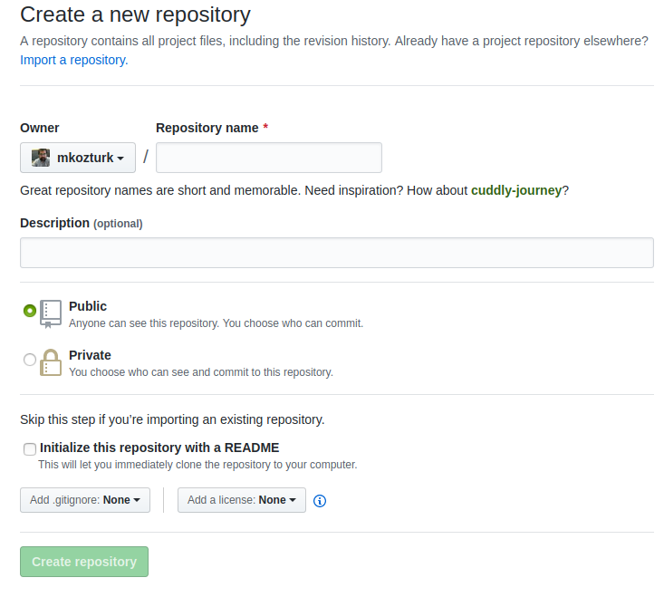
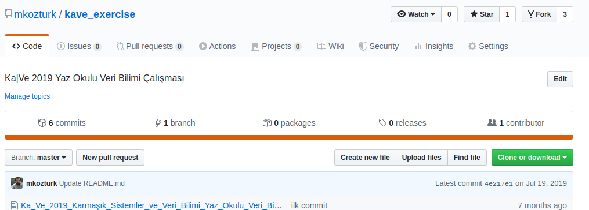
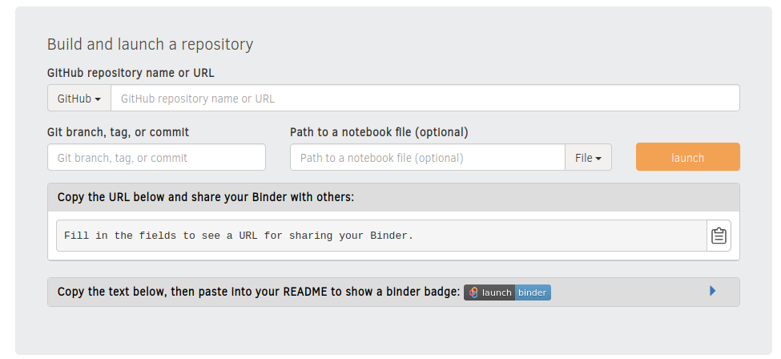

Binder ile Jupyter defterleri paylaşmak
Diyelim bir programlama eğitimi veriyorsunuz. Herkesin kullanması için bir Jupyter defteri hazırladınız. Katılımcılar bu defter üzerinde değişiklik yapacaklar, alıştırma problemleri çözecekler. Sorun şu ki, her katılımcı Jupyter ve diğer gerekli yazılımları kuramıyor. Bazılarının gerekli teknik bilgisi yok; bazıları kurabilmiş ama çalıştırdıklarında olmadık hata mesajları çıkıyor. Bazıları ise şirket bilgisayarlarında çalışıyor ve yazılım kurma yetkileri yok. Nereye koşacağınızı şaşırıyorsunuz.
Başka bir senaryo: Hesaplamalı bir çalışmayı bir bilimsel yayına çevirdiniz ve “tekrarlamalı araştırma” (reproducible research) prensiplerine göre, çalışmanızın kaynak kodlarını paylaşıyorsunuz. Hatta okuyanlara kolaylık sağlaması için açıklamaları, kodları ve grafikleri bir Jupyter defterine koydunuz, böylece her isteyenin sizin sonuçlarınızı tekrar üretebilmesini sağladınız. Sorun şu ki, ilgililer önce sizin hesaplama ortamınızı bilgisayarlarına birebir kurmak zorundadırlar. Yani sadece kullandığınız dilin (Python, R, Julia, Octave) yorumlayıcılarını kurmakla kalmayıp, kullandığınız özel amaçlı paketlerin belirli versiyonlarını da kurmaları gerekebilir. Hele yayınınızın üstünden birkaç yıl geçtiyse, kütüphanelerin yeni versiyonlardaki değişiklikler yüzünden kodunuz eski haliyle çalışmayabilir.
Bu sorunları nasıl çözeriz?
Binder nedir?
Bu gibi durumlarda, yazılım mühendisliğinde “container” denilen çözümler kullanılır. Bunlar bulutta (sunucularda) çalışan, kendine yeterli işletim ortamlarıdır. Bir containerdeki programın çalışması için gereken ne varsa (kaynak kodu yorumlayıcı, kütüphaneler vs.) container içinde mevcuttur. Containerleri yönetmek için en çok kullanılan sistem “Docker”dir. Bir Docker engine, belli bir standarda göre hazırlanan containerler ile işletim sistemi arasında bir katmandır ve containerlerin çalışmasını sağlar.
Yukarıda bahsettiğimiz senaryolardaki problemleri bir bulutta kurulu bir Docker container çözebilir. Ama bir eğitmen veya bir araştırmacı iseniz, Docker’ın inceliklerini öğrenmeye ayıracak zamanınız veya böyle bir hizmeti almaya ayıracak bütçeniz olmayabilir. Burada Binder devreye giriyor ve bahsettiğimiz senaryolarda çok işe yarayacak bir Docker hizmetini ücretsiz ve kolay kullanılır bir şekilde sunuyor.
Binder, ana hatlarıyla şöyle çalışıyor:
- GitHub’daki Jupyter defterlerinizi alıyor.
- Gerekli kütüphanelerin ne olduğuna bakıyor.
- Kodlarınızı çalıştırmak için gereken bütün yazılımları kurarak bir container hazırlıyor.
- Size tarayıcınızda çalıştırabileceğiniz bir arayüz sunuyor.
Bu adımlardan sonra herhangi birisi web tarayıcısı ile Binder’a bağlanarak aynı Jupyter defterini kendine göre çalıştırabilir. Her kullanıcı için ayrı bir ortam hazırlanacaktır ve birinin yaptığı değişiklikler diğerlerini etkilemeyecektir. Böylece herkes kendi keyfince denemeler yapabilir ve hesapları tekrarlayabilir.
Basit bir örnek olarak, 2019 Karmaşık Sistemler ve Veri Bilimi Yaz Okulu’ndaki uygulama dersi için hazırladığım çalışmayı inceleyebilirsiniz. Çalışmanın GitHub reposu ile hazırlanan Binder hizmetine bağlandığınızda canlı ve etkileşimli bir Jupyter defteri açabileceksiniz.
Bir Binder hizmeti oluşturmak
Şimdi böyle bir hizmeti en basit şekilde inşa edelim. Adımlarımız şöyle olacak:
- GitHub hesabı açmak
- Bir GitHub reposu oluşturmak
- Basit bir Jupyter notebook hazırlamak ve repomuza eklemek
- Repomuza Binder için gerekli bilgileri eklemek
- Binder’de repomuzu oluşturmak ve çalıştırmak
GitHub hesabı açmak için https://github.com/ adresine gidin. Kullanıcı adı, email ve parola kısımlarını doldurup “Sign Up” düğmesine tıklamanız yeterli.
GitHub’da yeni bir repository (repo), yani ilişkili dosyaları birleştiren bir alan yaratmak için sol üst kısımdaki “New” düğmesine tıklayın, veya https://github.com/new adresine gidin.

Repository ismi başka bir yerde kullanılmamış olmalı. Deneme için rastgele bir isim verebilirsiniz. Reponun herkese açık olması için “Public” seçilmesine dikkat edin, yoksa Binder repoya ulaşamaz. Diğer kısımlar bizim amaçlarımız için önemli değil.
Yarattığınız boş GitHub reposunu kendi bilgisayarınıza klonlamanız ve yarattığınız dosyaları “git” programını kullanarak GitHub ile senkronize etmeniz mümkün. Bu yazıda git kullanmanın ayrıntılarına girmeyeceğiz. Bununla ilgili ayrıntılı bilgiyi GitHub’dan veya başka kaynaklardan bulmanız mümkün.
Hazırladığınız Jupyter defterini “Upload files” düğmesine basarak yüklemeniz mümkün olur. Jupyter kullanmayı hiç bilmeyenler “Jupyter Notebook Nedir?” yazımıza bakabilir.

Bunun ardından, aynı repo içinde, kullandığınız Python kütüphanelerinin isimlerini ve sürüm numaralarını içeren requirements.txt isimli bir dosya oluşturmanız gerekli. Binder bu dosyaya bakarak Docker container içine Python’un yanı sıra neleri kurması gerektiğine karar verecek. Bu dosyayı oluşturmak için terminalde şu komutu çalıştırmanız yeterli.
$ pip freeze > requirements.txt
Ardından bu dosyayı da “Upload files” ile GitHub’a yükleyin.
Son olarak, bu repoyu kullanan bir Binder hizmeti oluşturalım. MyBinder sayfasına gidin. GitHub reponuzun URL’sini ilgili kutuya yapıştırın. Altta otomatik olarak, bu reponun MyBinder üzerinden paylaşılabileceği bir bağlantı çıkacak.

İşlem tamam!
MyBinder sunucusuna ilk defa bağlandığınızda ilgili yazılımları ve kütüphaneleri kurarak yeni bir Docker containeri oluşturacak. Bunun için birkaç dakika gerekebilir. Sonraki bağlantılarda böyle bir gecikme olmayacaktır. Bununla beraber, GitHub reposunda değişiklikler olursa (dosya değişirse veya yeni dosya yüklenirse) aynı işlem bir seferliğine tekrarlanacaktır.
Binder uygulama alanları
Yazının başındaki senaryolarımızın ortak sorunu, farklı bilgisayarlara sahip kişilerin aynı yazılım ortamını kendi bilgisayarlarına kurmaları ihtiyacıydı. Binder sayesinde bu sorunu ortadan kaldırıyoruz. Jupyter defterinizi çalıştırmak isteyenlerin bir tarayıcı açıp MyBinder bağlantısına gimeleri yeterli. Bilgisayar bile şart değil; cep telefonları ile de çalıştırabilirler. (Bunun temel sebebi Jupyter’in aslında bir web servisi olması.)
Gittiğiniz konferansta tanıştığınız, alanının lideri, seçkin ama geçkin bilim insanı size “Yaptığın çalışma çok ilginç, bendeki verilerle ve farklı parametrelerle denemek istiyorum” dediğinde “önce Python 3.7 kurmalısınız (3.8 olmasın), sonra libhede 1.0.4 kütüphanesi ve pyhödö 2.1.0-dev paketini kurun, ardından benim yazdığım konfigürasyon scriptini çalıştırın, sonra Jupyter kurun….” cevabı verirseniz onu kaybedersiniz. Onun yerine, “size whatsapp’dan bir link yollayayım, tıklayıp istediğiniz gibi çalıştırabilirsiniz” demeniz çok daha kolay olur herkes için.
MyBinder’in kısıtlamaları
MyBinder ücretsiz bir hizmet; ama kaynakları iyi paylaştırabilmek için bazı kullanım kısıtlamaları koyuyor. Örneğin, bir defter 10 dakikadan fazla boş kaldıysa otomatik olarak kapatılıyor. Binder her kullanıcıya en az 1GB bellek garantisi veriyor, ama bellek ihtiyacı 2GB’nin üstüne çıkarsa Jupyter çekirdeği tekrar başlatılıyor.
MyBinder açık bir hizmet olduğu için mahremiyet konusunda tedbirli olmanız tavsiye ediliyor. Repolarınızda hassas bilgiler (parolalar, API erişim şifreleri vs) bulunmamalı.
Daha ileri uygulamalar
Bu yazıda Python+Jupyter ile temel kullanımı özetledim, ama MyBinder hizmeti çok daha esnek. Örneğin, Python yerine R, Julia veya diğer dillerle de çalışabilirsiniz. Arayüz olarak JupyterLab veya RStudio kullanabilirsiniz.
GitHub reponuzda kendi yazdığınız kodlar ve paketler bulunabilir, Jupyter defterinde bunları import edebilirsiniz. Docker ile çalışma ortamının kurulmasının ardından, konfigürasyon gibi özel işlemler yapan bir script ekleyebilirsiniz. Daha fazla bilgi için MyBinder belgelerine bakabilirsiniz.